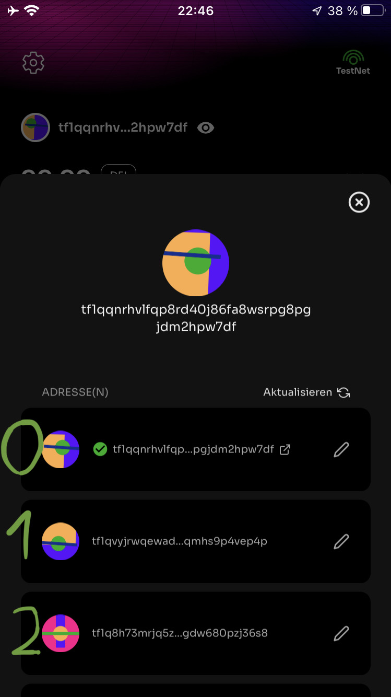

Basic Usage Of Transactions Builder#
Introduction#
This is a short introduction to the creation of raw transactions using the Defichain Python library. This explanation uses the defichain testnet. You can also use mainnet instead of the testnet.
Disclaimer
Please be careful when using this software. It requires your private key, which gives access to all your assets. So if your computer is compromised, all your assets could be stolen.
If you do not know what you are doing, please do not use this software.
Also check the code before you use it, it can not be excluded that there is an error that leads to a total loss of funds.
Don’t Trust, Verify!
General Information#
To use the raw transaction builder you should understand the following information:
Network#
The raw transaction implementation supports two networks of defichain: Mainnet, Testnet. Testnet is recommended to learn the functionality of raw transactions.
Setup Testnet#
You can use mydefichain faucet to fill up your testnet address with 1000 DFI.
For the simplicity of all involved I provide a mnemonic seed. On the first 10 testnet addresses are 50 UTXO and 50 DFI tokens each. Feel free to use them responsibly.
deputy army pluck artwork gallery supply bracket dilemma increase section silent coconut chimney auction ridge gravity cloth foot secret worry brother capital spread cheap
Address Types#
The raw transaction implementation will support three address types:
P2PKH (not yet implemented) -> “8FX8NeKa5WTSXmNzi2NdZNF8Vbyf3r1ujU”
P2SH -> “dbhKc6up7r85EqAySeNQ8GbcrHcCpUP2w6”
P2WPKH -> “df1qqnrhvlfqp8rd40j86fa8wsrpg8pgjdm2y35ddd”
(The addresses listed serve only as an illustration of the different address types on mainnet)
The defichain lightwallet uses the P2WPKH address.
Account#
An account describes one private key. Exactly one public key can be derived from this private key. This public key then results in exactly one P2PKH, one P2SH and one P2WPKH address.
Example:
Private Key: “2dc570673498c9e138336bd392a6971fe0996441d194947887ef0318d07b12da”
Public Key: “03a5c791ba2a9c2668fc10b095e742b971d7acd50ffa77d6b40b9974937cb6064e”
P2PKH: “8FX8NeKa5WTSXmNzi2NdZNF8Vbyf3r1ujU”
P2SH: “dbhKc6up7r85EqAySeNQ8GbcrHcCpUP2w6”
P2WPKH: “df1qqnrhvlfqp8rd40j86fa8wsrpg8pgjdm2y35ddd”
Wallet#
A wallet contains a private seed from which an infinite number of accounts can be generated. In case of the lightwallet the private seed will be derived from the mnemonic seed (24 words).
Example:
{kind=link}
Installation#
Install the package from PyPi.
pip install defichain -U
Building Raw Transaction#
1. Dependencies#
To be able to create transactions with the transaction builder some dependencies have to be created and then passed to the builder.
1.1 Wallet#
Creating a testnet wallet with the mnemonic seed.
from defichain.networks import DefichainTestnet
from defichain import Wallet
MNEMONIC = "deputy army pluck artwork gallery supply bracket dilemma increase section silent coconut chimney auction ridge gravity cloth foot secret worry brother capital spread cheap"
wallet = Wallet(DefichainTestnet) # Initializing the wallet as a testnet wallet
wallet.from_mnemonic(MNEMONIC) # Setting the wallet mnemonic seed
1.2 Account#
Derive the first account from the previously created wallet.
account = wallet.get_account(0) # Extracting the first account of the wallet
1.3 Remote Data#
Create the remote data source. The remote data source can either be Ocean like shown in the example or a connection to your own defichain node via Node / RPC.
You can also use no data source. But then you have to provide the needed information (inputs) yourself.
from defichain import Ocean
dataSource = Ocean(network="testnet") # Initializing the remote data source -> testnet ocean
2. Transaction Builder#
The transaction builder is the hart of the hole implementation. It creates transactions for the specified address and is thereby using the corresponding account to sign the transaction and the data source to query all needed data.
from defichain import TxBuilder
builder = TxBuilder(address, account, dataSource, 1.0) # Creating the transaction builder object
3. Build transaction#
There are two different types of transactions:
3.1 UTXO#
There are native (UTXO) transactions. These transactions almost work like bitcoin transactions. These transactions are only about sending UTXO DFI to a given address.
tx_sendall = builder.utxo.sendall(address) # Sends all UTXO minus fee from the address specified in the builder object to the address specified as parameter
3.2 DefiTx#
There are defi transactions. These transactions are all transactions that distinguish defichain from bitcoin. For example, there are UtxosToAccount, AccountToAccount, PoolSwap …
tx_poolswap = builder.pool.poolswap(address, "DFI", 1, address, "BTC", 99.99999999) # Create a poolswap transaction with the specified parameters
4. View the transaction#
The created transaction can be printed to the console in an easy to analyse format.
print(tx_poolswap) # Prints the raw transaction in a deserialized format to the console
Output:
{
"txid": "1fcbdcd1b18753fb24dcaeb259fffeb84123e29e04db688b37522fbe8ce49365",
"hash": "21f16f151f688f222c380b27c95a594643794b4b51c136bbf0da42c34dfdf9db",
"size": 283,
"fee": 282,
"version": 4,
"marker": 0,
"flag": 1,
"inputs": [
{
"inputType": "P2WPKH",
"txid": "1d9de1fb561fab9d7243d37c0b9308955bc777434e6f408a82f816da4cb40586",
"vout": 1,
"scriptSig": "",
"sequence": "ffffffff",
"address": "tf1qqnrhvlfqp8rd40j86fa8wsrpg8pgjdm2hpw7df",
"value": 4999999254,
"witness": {
"lengthSignature": 72,
"signature": "3045022100b11e61ff38835e09e5f4b4e5417808b99e1ddd3ccf792a60f929db22d3a93a2802203a3a69be756a4451e9461b1d795a13f0c837e104cc7081017c3dfd844529c21c01",
"lengthPublicKey": 33,
"publicKey": "03a5c791ba2a9c2668fc10b095e742b971d7acd50ffa77d6b40b9974937cb6064e"
}
}
],
"outputs": [
{
"outputType": "defiTx",
"value": 0,
"defiTx": {
"defiTxType": {
"typeName": "OP_DEFI_TX_POOL_SWAP",
"typeHex": "73"
},
"addressFrom": "tf1qqnrhvlfqp8rd40j86fa8wsrpg8pgjdm2hpw7df",
"tokenFrom": 0,
"amountFrom": 100000000,
"addressTo": "tf1qqnrhvlfqp8rd40j86fa8wsrpg8pgjdm2hpw7df",
"tokenTo": 1,
"maxPrice": 9999999999
},
"script": "6a4c4d446654787316001404c7767d2009c6dabe47d27a77406141c289376a0000e1f5050000000016001404c7767d2009c6dabe47d27a77406141c289376a016300000000000000ffe0f50500000000",
"tokenId": 0
},
{
"outputType": "address",
"value": 4999998972,
"address": "tf1qqnrhvlfqp8rd40j86fa8wsrpg8pgjdm2hpw7df",
"script": "001404c7767d2009c6dabe47d27a77406141c289376a",
"tokenId": 0
}
],
"lockTime": 0,
"serialized": "040000000001018605b44cda16f8828a406f4e4377c75b9508930b7cd343729dab1f56fbe19d1d0100000000ffffffff020000000000000000506a4c4d446654787316001404c7767d2009c6dabe47d27a77406141c289376a0000e1f5050000000016001404c7767d2009c6dabe47d27a77406141c289376a016300000000000000ffe0f5050000000000fced052a0100000016001404c7767d2009c6dabe47d27a77406141c289376a0002483045022100b11e61ff38835e09e5f4b4e5417808b99e1ddd3ccf792a60f929db22d3a93a2802203a3a69be756a4451e9461b1d795a13f0c837e104cc7081017c3dfd844529c21c012103a5c791ba2a9c2668fc10b095e742b971d7acd50ffa77d6b40b9974937cb6064e00000000"
}
5. Send transaction#
Using the builder with the given data source, the created transactions can then be easily submitted to the blockchain.
txid = builder.send_tx(tx_poolswap) # Broadcasts the created transaction to the blockchain
print(txid) # prints the txid
>>> "1fcbdcd1b18753fb24dcaeb259fffeb84123e29e04db688b37522fbe8ce49365"
Full Code#
This code creates a poolswap transaction, signs it with the private key and broadcasts it to the testnet blockchain.
# Imports
from defichain.networks import DefichainTestnet
from defichain import Wallet
from defichain import Ocean
from defichain import TxBuilder
MNEMONIC = "deputy army pluck artwork gallery supply bracket dilemma increase section silent coconut chimney auction ridge gravity cloth foot secret worry brother capital spread cheap"
wallet = Wallet(DefichainTestnet) # Initializing the wallet as a testnet wallet
wallet.from_mnemonic(MNEMONIC) # Setting the wallet mnemonic seed
account = wallet.get_account(0) # Extracting the first account of the wallet
dataSource = Ocean(network="testnet") # Initializing the remote data source -> testnet ocean
address = account.get_p2wpkh() # Extracting the P2WPKH address from the account
builder = TxBuilder(address, account, dataSource, 1.0) # Creating the transaction builder object
tx_poolswap = builder.pool.poolswap(address, "DFI", 0.001, address, "BTC", 99.99999999) # Create a poolswap transaction with the specified parameters
print(tx_poolswap) # Prints the raw transaction in a deserialized format to the console
txid = builder.send_tx(tx_poolswap) # Broadcasts the created transaction to the blockchain
print(txid) # prints the txid